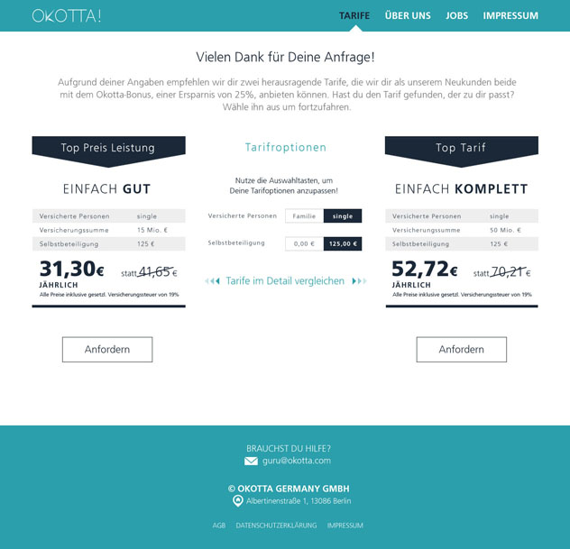
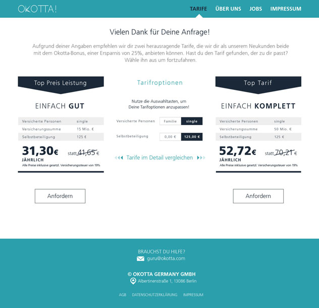

Works


Okotta! native apps
Okotta's product was a digital insurance wallet app for iOS and Android. I joined the company midway through the project, and eventually took over product management entirely, several months before the initial release. The MVP was heavily compromised, as the company had to pivot late into the development phase. Shortly after the release, I initiated a complete UX rework of the app (seen in the mockups), to optimise it for the pivoted concept, and make the design significantly more sexy than in the initial release. The redesigned app never made it into the appstores, as Okotta's technology and customers were acquired by a large player in the insurance industry, several months after going live.
The original Okotta app can still be found on the appstore here.
 

Okotta! Website
The Okotta web site was the main channel for organic user acquisition. I was the product manager in its entire lifecycle. The value proposition was simple - buy an insurance policy via Okotta, and get a companion app, with insurance documents, live-chat support and automation features, such as claim management. The MVP was very basic and completely manual in the backend. Despite that, due to great insurance being sold at a competitive price, the ECR was fantastic. The website did so well, that the only feature iteration we did in its 6 month lifespan was to better meet legal requirements.
The website was taken offline once the company got acquired. The okotta.com is now showing a part of a pre-release web site as a placeholder.
Discovery improvements on DaWanda marketplace
At DaWanda I was took charge of a strategic initiative to improve product discovery on the marketplace. In my 6 months at DaWanda, I released multiple minor iterative improvements to the product search, such as auto-complete suggestions. My major release was the product quickview, which allows users to see product details (and recommended related products) without leaving the catalogue. True story - its initial version actually had a marginal negative impact on direct traffic converstion, and we had to iterate quickly to improve the UX. Apparently, users were too much used to the way things had worked before quickview, and were getting frustrated when the behaviour changed.
Quickview has been iterated upon, but follows the same concept I introduced before my departure from the company. See it for yourself on DaWanda

zanox developer portal
My first job as a PM was at zanox, where I was responsible for all platform APIs and partner integrations. Soon after starting, it became apparent that while the APIs were really good, nobody knew how to use them properly - documentation was outdated or non-existent, and account managers could not answer technical questions. I launched the zanox developer portal within several months to mitigate this problem. The UX concept and layout are blatantly stolen from twitter, with zanox logo and colours slapped on top. SSO allows zanox users to log in, comment, and post in the forum. It all runs on one legacy server somewhere at zanox, and ops dread to talk about it. While at the time it seemed to me that I was completely failing to deliver a quality product, in hindsight, I think this was the best and most useful MVP I have ever launched. I released it very fast, and it just got the job done - we could reduce a full FTE of support effort as a result.
As it usually goes in big companies, the portal hasn't been updated a lot since my departure. Indeed, the last developer blog post is still mine from 2013. Good times! :) Check it out here